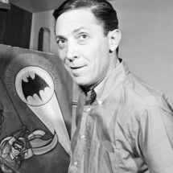

Aos 8 anos, Bruce Wayne presenciou o assassinato de seus pais nos becos de Gotham City. Naquela noite, sua infância chegou ao fim, dando lugar a uma dor que o acompanharia pelo resto da vida. Em meio ao medo e à solidão, Bruce prometeu transformar sua tragédia em determinação e jurou combater o crime que consumia a cidade, para que nenhum outro inocente sofresse o mesmo destino.
Ao lado de Alfred, o mordomo da família, Bruce decidiu que ele precisava se tornar algo maior, ele precisava se tornar um símbolo que o crime jamais esqueceria. Anos se passaram, e Bruce dedicou sua vida a superar seus próprios limites, aprimorando sua mente, seu corpo e suas habilidades para enfrentar o crime. Para combater a escuridão que consumia Gotham, ele precisaria se tornar parte dela.
Assim nasceu o Batman: um homem sem superpoderes, mas equipado com tecnologia avançada, habilidades de combate excepcionais e inteligência incomparável. Ele emergiu das sombras como um símbolo de justiça. Para os criminosos, um pesadelo à espreita na noite. Para os inocentes, uma última esperança em meio ao caos.
“Eu sou a vingança. Eu sou a noite. Eu sou o Batman!”
Bob KaneApresentou a primeira ideia do Batman para a DC Comics em 1939, um herói que usava um collant vermelho, uma pequena máscara de dominó, cabelo loiro e asas rígidas de morcego.
Bob Kane levou para a editora as contribuições fundamentais de Bill Finger como se fossem inteiramente suas e assinou um contrato para que somente seu nome fosse constado como criador.
Faleceu em 1998.
É o responsavel por moldar a verdadeira identidade do herói, criando o visual clássico do morcego e criando todos os nomes e mitologias ao redor de Gotham City e Bruce Wayne.
Faleceu em 1974 sem o devido reconhecimento financeiro ou formal, e somente em 2015, a DC Comics passou a credita-lo como co-criador do Batman.